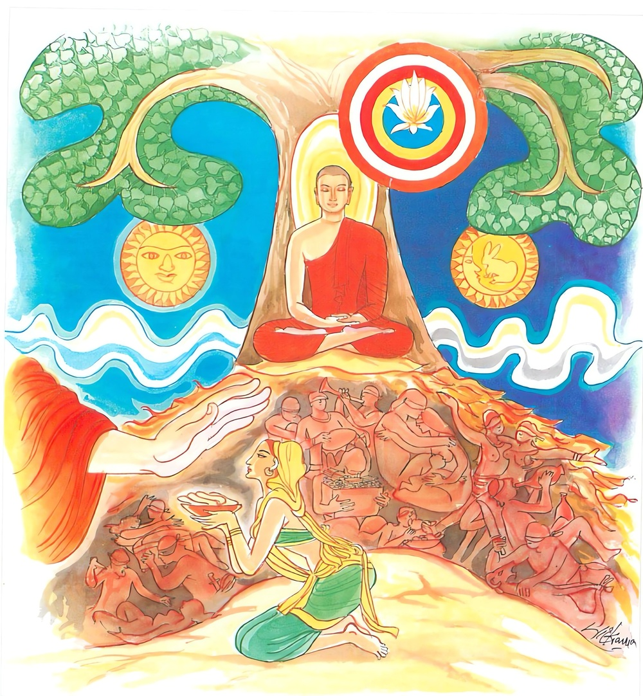

17-6 කුඩු කැවුමක් පිළිගැණීම
මෙම කතාව ධම්මපද අටුවාවෙන් ද කියවන්න.
සදා ජාගරමානානං අහොරත්තානුසික්ඛිනං
නිබ්බාණං අධිමුත්තානං අත්ථං ගච්ඡන්ති ආසවා.
හැම කල්හි පිබිදැ සිටින (කෙලෙස් නින්දෙන් නො නිදන), දව රෑ දෙක්හි තුන් සිකෙහි හික්මෙන, කෙලෙස් පිරිනිවනෙහි ඇලුනු යෝගවචරයන්ගේ ආශ්රවයෝ විනාශයට යන්නාහ.

බුදුරජානන් වහන්සේ ගිජුකුළු පව්වෙහි වැඩවසන කල්හි රජගහ සිටුහට පුණ්ණා නම් දැස්සක් වූ ය. දවසක් ඈට කොටා ලන්නට මහත් වූ වී ගොඩක් දුන්හ. ඕ තොමෝ රෑද පහන් දල්වා ගෙණ වී කොටන්නී ඩහදියෙන් තෙමී ගිය සිරුරු ඇතියා විඩා හරින්නට පිටතට ගොස් සුළං හමනා තැනක සිටියා ය.
ඒ කාලයෙහි දබ්බමල්ලපුත්ත මහා ස්ථවිරයන් වහන්සේ භික්ෂූන්ට සෙනසුන් පැණවීමෙහි කාර්ය්යභාරය ඉසුලූහ. එහෙයින් උන්වහන්සේ බණ අසා තම තමන්ගේ සෙනසුන් කරා යන්නා වූ භික්ෂූන්ට මග පෙන්වීමට තමන් වහන්සේගේ ඇඟිල්ලක් දල්වා ඔවුන් ඉදිරියහි යන්නාහ. පුණ්ණා තොමෝ ඒ එලියෙන් පව්වෙහි ඒ ඒ තැන යන එන භික්ෂූන් දැක “මම නම් මාගේ දුකින් පෙළුනී මේ මහ රෑත් නිදි නො ලබා වැඩ කරමි, කුමක් නිසා මේ පින්වතුන් වහන්සේලා මේ මහ රෑ නො නිදත් ද එකාන්තයෙන් මෙහි කවර නමක්හට හෝ ලෙඩක් දුකක් විය යුතු ය, නයි-පොළොං ඈ සතකුගෙන් හෝ උපද්රවයක් විය යුතු ය”යි සිතා උදෑසන ම කුඩු සුඟක් ගෙණ දියෙන් තෙමා අත්ලෙහිම කැවුමක් සාදා ගිනි අඟුරෙහි තබා පුළුස්සා ඔඩොක්කු වෙහි සඟවා ගෙණ ගංතොටට යන මගදී කන්නෙමි”යි කළයක් ගෙණ පැන්තොට බලා නික්මුනා ය. බුදුරජානන් වහන්සේ ද ගමට පිඬු සිඟා වඩින්නට ඒ මගට ම පිළිපන් සේක. පුණ්ණා බදුරජුන් දැක මෙයට පෙර අන් දිනයන්හි බුදුරජුන් හමු වුව ද උන්වහන්සේට පිදීමට මා අත පිදිය යුතු දැයෙක් නො වී ය, අද නම් යම් තම් දැයෙක් ඇත්තේ ය, බුදුරජානන් වහන්සේ ද හමු වූ සේක, ඉදින් මා පුදනු ලබන දැයෙහි මිහිරි නො මිහිරි බව නො සලකා පිළිගන්නා සේක් නම් මේ කුඩු කැවුම පුදන්නෙමි”යි කළය එකත් පසෙක තබා බුදුරජුන් වැඳ “ස්වාමීනි! මාගේ මේ රසක් ගුණයක් නැති රළු දානය පිළිගෙණ මට සඞ්ග්රහ කරණු මැනැවැ”යි ඉල්ලා සිටියා ය. බුදුරජානන් වහන්සේ අනඳ තෙරුන් පසිබ්බකයෙන් බැහැරට ගෙණ දුන් මහරජුන් විසින් දෙන ලද පාත්රය එළවා කැවුම පිළිගත් සේක. පුණ්ණා ද එය පාත්රයෙහි පිහිටුවා පසඟ පිහිටුවා වැඳ “ස්වාමීනි! බුදුරජුන් විසින් අවබෝධ කළ ධර්මය ම මටත් ලැබේවා”යි පැතූ ය. උන්වහන්සේ “එසේ වේවා”යි එහි සිට ම අනුමෙවෙනි බණ වදාළ සේක.
ඉක්බිති පුණ්ණා තොමෝ “බුදුරජානන් වහන්සේ මට සඞ්ග්රහය පිණිස කැවුම පිළිගත් සේක, එහෙත් එය නො වළඳනු ඇත, එකාන්තයෙන් එය ඉදිරියෙහි කවුඩකුට හෝ දී රජකුගේ හෝ රාජපුත්රයකුගේ ගෙට ගොස් මිහිරි බොජුන් වළඳනා සේකැ”යි සිතූ ය. බුදුරජානන් වහන්සේ “පුණ්ණා මෙසේ සිතා ය”යි ඇයගේ සිත්හසර දැන අනඳ තෙරුන් දෙස බැලූහ. ආනන්ද ස්ථවිරයන් වහන්සේ උන්වහන්සේට වැඩ හිඳින්නට සිවුර පණවා ලූහ. බුදුරජානන් වහන්සේ නුවරෙන් පිටත ම වැඩ හිඳ කුඩු කැවුම වැළඳූ සේක. දෙවියෝ සක්වල ගැබ දෙව් මිනිසුනට සුදුසු වූ රස ඕජාව මීවදයක් පෙළා මී මිරිකා ගන්නා සේ මිරිකා ගෙණ ඒ කැවුමෙහි බැහූහ. පුණ්ණා ද එය වළඳනු බලා සිටියා ය. කැවුම් වළඳා අවසන්හි ආනන්ද ස්ථවිරයන් වහන්සේ පැන් පිළිගැන්නූහ. බුදුරජානන් වහන්සේ කැවුම් වළඳා අවසන්හි පුණ්ණාව අමතා “පුණ්ණා! කුමක් නිසා තී මාගේ සව්වනට ගරහා දැ”යි අසා වදාළ සේක. “නැත ස්වාමීනි! මම පරිභව නො කරමි”යි කී කල්හි “එසේ නම් ඊයේ පෙරේදා මාගේ සව්වන් දෙස බලා තී විසින් කුමක් කියන ලද දැ?”යි ඇසූහ. “මම නම් පෙර වැඩ කිරීමෙන් උපදනා දුක් උවදුරෙන් පෙළී නිදි නො ලබමි, මේ පින්වතුන් වහන්සේලා කුමක් නිසා මේ රෑ නො නිදන්නාහු ද, එකාන්තයෙන් කවරක්හට හෝ ලෙඩක් දුකක් විය යුතුය, නැත, නයි-පොළොං ඈ සතකුගෙන් උවදුරක් විය යුතු ය”යි ස්වාමිනී! මම මෙතෙක් සිතීමි, අන් කිසිත් නො සිතීමි”යි කිවු ය. “පුණ්ණා! තී නම් පරවැඩ නිසා දුක් උවදුරෙන් පෙළෙන්නී නො නිදහි, මාගේ සව්වෝ හැම දා නිදිවැරීමෙහි යෙදී සිටුනා බැවින් නො නිදත්”යි වදාරා මේ ධර්මදේශනාව කළ සේක.
සදා ජාගරමානානං අහොරත්තානුසික්ඛිනං,
නිබ්බානං අධිමුත්තානං අත්ථං ගච්ඡන්ති ආසවා ති.
සියලු කල්හි නොනිදන්නා වූ දවරෑහි හික්මෙන්නා වූ නිවනෙහි ඇලුනවුන්ගේ ආස්රවයෝ විනාශයට යෙත්.
සදා ජාගරමානානං = සියලු කල්හි නො නිදන්නා වූ
මෙහි කියූ නො නිදීම කෙලෙස් නින්දෙන් නො නිදීම ය. කෙලෙසුනට වසඟව කෙලෙසුනට යටත්ව නො විසීම ය. එහෙයින් කිසිවිටෙකත් රාග ද්වේෂ මෝහාදි ක්ලේශ රාශියෙන් ආතුරව ගිලන් ව සිටිනවුන්ගේ කාමාදි ආස්රව ධර්මයෝ මොනලෙසකිනුත් විනාශයට නො යෙත්.
අහොරත්තානුසික්ඛිනං = දවරෑහි හික්මෙන්නා වූ
ශීල - සමාධි - ප්රඥා සඞ්ඛ්යාත ශික්ෂාවන්හි හික්මීම මෙයින් ගැණේ. අනෙක් හැම හික්මීමෙක් ත්රිවිධශික්ෂාවන්හි හික්මීමට යට ව සිටියේ ය. ත්රිවිධ ශික්ෂාවන්හි හික්මෙන්නේ ම සසරදුකින් නිදහස ලබන්නේ ය. මොහුගේ ම ආස්රවයෝ විනාශයට යෙත්.
“අහං ච රත්ති ච = අහොරත්තං” යනු අන්යොන්යවිරුද්ධාර්ත්ථ යන්ගේ සමාසය යි. ‘අහොරත්ති’ යන මෙහි ඉකාරයට අකාරය ව ‘අහොරත්ත’ විය.
නිබ්බානං = නිවනෙහි [1]
මෙහි ‘නිබ්බානං’ යන්නට නිවනෙහි යී අරුත් දෙන්නේ ඉදිරියෙහි ඇති ‘අධිමුත්තානං’ යනු බලාය. ‘අධිමුත්තානං’ යන මෙහි යෙදී සිටි අධි යන්නහු ආධාරත්වය කියන්නේ ද එහෙයිනි.
අධිමුත්තානං = ඇලුනවුන්ගේ. භාවනායෙහි යෙදෙන්නවුන්ගේ. නිර්වාණාද්ධ්යාසය දන්නවුන්ගේ.
අත්ථං ගච්ඡන්ති ආසවා = ආස්රවයෝ විනාශයට යෙත්.
මෙහි අත්ථ ශබ්දයෙන් විනාශය කියැ වේ. මේ වනාහි ප්රයෝජන - ඵල - ශබ්දාර්ත්ථ - වෘද්ධි - වස්තු - ද්රව්ය - විනාශ - පශ්චිම පර්වත යන අරුත්හි ආයේ ය. “කිමත්ථං ආගතොසි - අත්ථෙ ජාතෙ ච පණ්ඩිතා - සාත්ථං සව්යඤ්ජනං - හොති සීල - වතං අත්ථො - යද්යප්යත්ථෙ පතිට්ඨිතා - අත්ථං ගච්ඡන්ති ආසවා - අත්ථඞ්ගතෙ දිවසකරෙ - යන මොවුහු එයට නිදර්ශන වෙත්. මෙය සප්තම්යර්ත්ථයෙහි නිපාතයක් සේ ද එයි. [2]
ධර්මදේශනාවගේ අවසානයෙහි පුණ්ණා තොමෝ සිටිපරිද්දෙන් ම සෝවන්පලයෙහි පිහිටා ගත්තා ය. පැමිණ සිටි පිරිසටද ධර්මදේශනාව සාර්ත්ථක වූය. බුදුරජානන් වහන්සේ ගිනිඅඟුරෙහි ලා පුළුස්සා ගත් කුඩුකැවුම් වළඳා වෙහෙරට වැඩි සේක. ඒ අතර භික්ෂූන් වහන්සේ “ඇවැත්නි! බුදුරජුන් විසින් කරණ ලද්දේ අමාරුකාරියෙකි, පුණ්ණාව විසින් පිළිගැන්නූ කුඩුකැවුම් වැළඳීම ලෙහෙසි කාරියෙක් නො වේ”යි දම්සබා මඩුල්ලට රැස්ව කතා කරන්නට වූහ. එ වේලෙහි බුදුරජානන් වහන්සේ එහි වැඩ “මහණෙනි! තමුසේලා මෙහි රැස්ව කුමක් කතා කරමින් හුන්නහු දැ”යි විචාළ කල්හි කළා වූ කුඩුකැවුම් කතාව දැන් වූහ.
“මහණෙනි! මම කුඩුකැවුම් වැළඳූයෙම් දැන් පමණක් ම නො වෙමි, පෙරත් මැය දුන් කුඩුත් වැළඳීම්” යි ඒ අතීත පුවත දක්වනු පිණිස,
“ඉඳුල් තණ හා උළු - කැන් දිය කුඩු ද කා බී,
වැඩුනෙහි ද මෙ බොජුන් තට - වීය දැන් කිම නො බුදිහි.
.
යම් තැන බොහෝ දෙන - දෑ විනයුමෙන් එ පුරිස්,
නෙ දනිත් ද එහි මහබඹ! - බුදිමි උළුකැන් දිය කුඩු.
.
අස්රදක් වූ මම - යම් බඳුයෙම් ද එබඳූ,
කුලපෙදෙස් ඈ විසිනුදු - මා ගැණ තෝ ද දනිහි.
.
මම තමන් බල දැන - මාගේ උතුම් අසු බැව්,
දන්නා තා වෙතටවුත් - නො කමි කුඩු (කිසිලෙසකින්)” යි.
මේ කුණ්ඩකසින්ධව පෝතක ජාතකය විස්තර විසින් වදාළ සේක.
පුර්ණා වස්තුව නිමි.